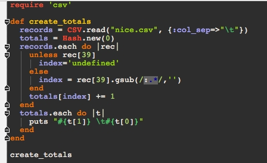
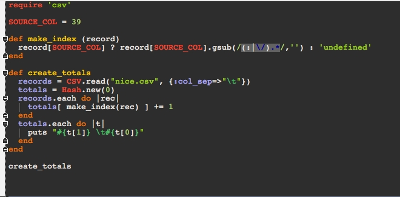
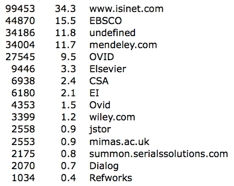

Manipulating activity data using Ruby
Author
Mark van Harmelen writing at Hedtek's blog
.
Purpose
To demonstrate how scripts written in Ruby can be used to manipulate a activity data (in this case
OpenURL log file contents)
Description
This is an alternative method to that used by Tony Hirst in
Playing With Large (ish) CSV Files, and
Using Them as a Database from the Command Line: EDINA OpenURL Logs
while experimenting
with processing a reasonably large data set with *NIX command line tools. The data set is the
recently published OpenURL Router Data
. Inspired by this post I wondered what I could hack up
in Ruby to process the same data, and if I could do this processing without a database. The
answer is that it is pretty simple to process.
First what is the OpenURL Router, and what is its data? What we need to know here is that the
Router effectively enables library services to find the URLs for online bibliographic resources (
more detail ). A simplification is that the Router supply a translation from bibliographic data to the URL
in question. The OpenURL router is funded by
JISC and administered by
EDINA in association
with UKOLN .
Suitably anonymised OpenURL Router Data
has been published by Using OpenURL Activity Data
Project. This project is participating in JISC’s Activity Data Programme where Hedtek is
collaborating in the synthesis of the outputs of the projects participating in this programme. Hence
my interest in the data and what can be done with it.
My initial interest was in who has what proportion referrals. Tony computed this, and I wanted to
replicate his results. In the end I had a slightly different set of results.
Downloading
and decompressing this CSV data was pretty easy, as was honing in on one field of
interest, the source of the data being referred to.
Tony’s post and the
OpenURL Router Data documentation made it pretty easy to hone in on the 40th field in each line of this CSV formatted
data.
My first attempts were to use a ruby gem, CSV, from the ruby interpreter irb. This went well
enough but I soon discovered that CSV wouldn't handle fields with a double quote in them.
Resorting to the my OS X command line
tr \" \' < L2_2011.csv > nice.csv
soon sorted that out.
It soon emerged that I needed to write a method, so I flipped to the excellent
RubyMine , and soon
hacked up a little script. Interestingly, I found that the representation of the site with the requested
resource often had a major component and a minor component, separated by a colon, thus
EBSCO:edswah
EBSCO:CINAHL with Full Text
etc
Having been excited by previous mention of
Mendeley by Tony and wanting to find out the
percentage of references to Mendeley’s data for another piece of work I am doing, I stripped out
the minor component, and came up with the following code

While its open to a good refactoring, it did the job well enough, producing an unsorted list of
results. A quick refactor resulted in the following, which also coalesced both mendeley.com and
mendeley.com/mendeley into one result.

To sort the output I used a command line sort after the script invocation
ruby totals.rb | sort -nr
and obtained the following, here only listing those sites with more than 1000 references
99453 www.isinet.com
44870 EBSCO
34186 undefined
34004 mendeley.com
27545 OVID
9446 Elsevier
6938 CSA
6180 EI
4353 Ovid
3399 wiley.com
2558 jstor
2553 mimas.ac.uk
2175 summon.serialssolutions.com
2070 Dialog
1034 Refworks
The rest, working out percentages, is easy thanks to Excel, see the middle column
